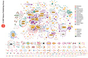
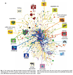
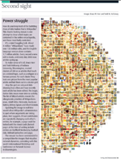
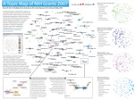
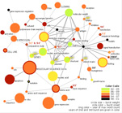
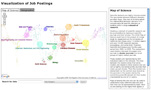
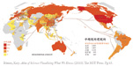
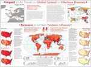

|
Gallery
Provided by the Cyberinfrastructure for Network Science Center at Indiana University. |
|
| Network Workbench Tool ( NWB) | |
|  |
Computational Proteomics
What relationships exist between protein targets of all drugs and all disease-gene products in the human protein–protein interaction network? Reference: Yildriim, Muhammed A., Kwan-II Goh, Michael E. Cusick, Albert-László Barabási, and Marc Vidal. (2007). Drug-target Network. Nature Biotechnology 25 no. 10: 1119-1126. |
|  |
Computational Economics
Does the type of product that a country exports matter for subsequent economic performance? Reference: C. A. Hidalgo, B. Klinger, A.-L. Barabási, R. Hausmann (2007). The Product Space Conditions the Development of Nations. Science 317, 482. |
|  |
Computational Social Science
Studying large scale social networks such as Wikipedia Reference: Second Sight: An Emergent Mosaic of Wikipedian Activity, The NewScientist, May 19, 2007 |
| Science of Science Tool ( Sci 2 ) | |
|  |
A Topic Map of NIH Grants 2007
This map was created for the Places & Spaces Mapping Science Exhibit. See more . Reference : Herr II, Bruce W., Gully Burns, David Newman and Edmund Talley (2007). A Topic Map of NIH Grants 2007. Bloomington, IN. In Katy Börner & Elisha F. Hardy (Eds.), 5th Iteration (2009): Science Maps for Science Policy Makers, Places and Spaces: Mapping Science. http://scimaps.org (accessed 5/21/2010). |
|  |
Mapping Topics and Topic Bursts in PNAS
Co-word space of the top 50 highly frequent and bursty words used in the top 10% most highly cited PNAS publications in 1982-2001. Reference : Mane, Ketan K. & Börner, Katy (2004). Mapping Topics and Topic Bursts in PNAS. Proceedings of the National Academy of Sciences of the United States of America. Vol. 101 (Suppl. 1) , 5287-5290. |
|  |
Visualization of Job Postings
Reference : Zoss, Angela, Conover, Michael & Börner, Katy (2010). Where Are the Academic Jobs? Interactive Exploration of Job Advertisements in Geospatial and Topical Space. Sun-Ki Chai, John Salerno and Patricia L. Mabry, Eds. Advances in Social Computing: Third International Conference on Social Computing, Behavioral Modeling and Prediction, SBP10: Bethesda, MD, March 30-31, Springer, pp. 238-247. |
|  |
Research Collaborations by the Chinese Academy of Sciences
This map highlights the research co-authorship collaborations of the Chinese Academy of Sciences with locations in China and countries around the world. The large geographic map shows the research collaborations of all CAS institutes. Each smaller geographic map shows the research collaborations by the CAS researchers in one province-level administrative division. Collaborations between CAS researchers are not included in the data. On each map, locations are colored on a logarithmic scale by the number of collaborations from red to yellow. The darkest red is 3,395 collaborations by all of CAS with researchers in Beijing. Also, flow lines are drawn from the location of focus to all locations collaborated with. The width of the flow line is linearly proportional to the number of collaborations with the locations it goes to, with the smallest flow lines representing one collaboration and the largest representing differing amounts on each geographic map. Reference: Cyberinfrastructure for Network Science Center, Indiana University, Bloomington (2009). Research Collaborations by the Chinese Academy of Sciences. http://scimaps.org/maps/map/research_collaborati_110/ (accessed 1/6/2010). |
| Epidemics Tool ( EpiC) | |
|  |
Computational Epidemics
References: Epidemic Modeling in Complex realities, V. Colizza, A. Barrat, M. Barthelemy, A.Vespignani (2007). Comptes Rendus Biologie, 330, 364-374. Reaction-diffusion processes and metapopulation models in heterogeneous networks, V.Colizza, R. Pastor-Satorras, A.Vespignani (2007). Nature Physics 3, 276-282. Modeling the Worldwide Spread of Pandemic Influenza: Baseline Case and Containment Interventions, V. Colizza, A. Barrat, M. Barthelemy, A.-J. Valleron, A.Vespignani (2007). PloS-Medicine 4, e13, 95-110. |
{kind=link}
{kind=link}
{kind=link}
{kind=link}
{kind=link}
{kind=link}
{kind=link}
All content © 2010 | Cyberinfrastructure for Network Science Center | School of Library & Information Science